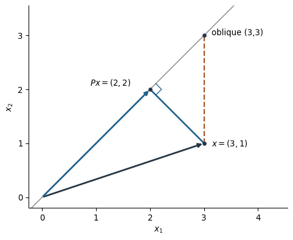

4 Session 3 — Orthogonal Projections
Given a vector \(x\) and a subspace \(U\), which vector in \(U\) should we call the component of \(x\) along \(U\)? Session 1 supplied basis matrices for describing points already in a subspace. Session 2 supplied a new test: subtract a candidate component and ask whether the remainder is perpendicular to every direction in \(U\). This session turns that test into a linear operator and shows why its output is the closest point in \(U\).
Allow 45–50 minutes for the derivations and worked examples, then 25–30 minutes for the exercises. To test recall during the reading, cover each projector formula and reconstruct it from the residual condition.
Throughout, \(V\) is a finite-dimensional inner-product space over \(\mathbb F=\mathbb R\) or \(\mathbb C\). As in Session 2, the inner product is linear in the first argument. Matrix formulas use standard orthonormal ambient coordinates, so \(\langle x,y\rangle=y^*x\), where \(^*\) denotes conjugate transpose (transpose over \(\mathbb R\)). Write \(\|\cdot\|\) for the induced norm.
4.1 The component selected by the inner product
A direct sum \(V=U\oplus W\) gives every \(x\) a unique expression \(x=u+w\). Its component \(u\) depends on the choice of \(W\). In the plane, for instance, one can reach the horizontal axis from \(x\) by moving vertically or by moving along a slanted line. The two paths generally reach different points. Once an inner product is fixed, it singles out the complement \[ U^\perp=\{z:\langle z,v\rangle=0\text{ for all }v\in U\}. \]
Existence. Choose an orthonormal basis \(q_1,\ldots,q_k\) of \(U\), available by Gram–Schmidt. Set \(u=\sum_{j=1}^k\langle x,q_j\rangle q_j\). For every \(i\), \(\langle x-u,q_i\rangle=\langle x,q_i\rangle-\langle x,q_i\rangle=0\). Hence \(x-u\) is perpendicular to their entire span. This includes \(U=\{0\}\) by taking the empty sum.
Uniqueness. If \(x=u+r=u'+r'\) with \(u,u'\in U\) and \(r,r'\in U^\perp\), then \(u-u'=r'-r\) belongs to both spaces. A vector in their intersection is perpendicular to itself and therefore zero. Thus \(V=U\oplus U^\perp\). The assignment \(P_Ux=u\) is the orthogonal projection onto \(U\). It is linear by the coefficient formula above.
Choosing a basis of \(U\) tells us how to encode \(u\) after selecting it. Choosing \(U^\perp\) tells us which \(u\) to select, even for an \(x\) outside \(U\). Any basis of the same \(U\) must lead to the same selected vector if the inner product is fixed.
4.2 Projection onto a line
Let \(U=\operatorname{span}\{v\}\) with \(v\ne0\). Every candidate has the form \(cv\). To select one, impose the single residual equation \[ v^*(x-cv)=0. \] Since \(v^*v=\|v\|^2>0\), it follows that \[ c=\frac{v^*x}{v^*v},\qquad P_Ux=\frac{v^*x}{v^*v}\,v, \qquad P_U=\frac{vv^*}{v^*v}. \] The denominator converts a measurement against a possibly long vector into its basis coefficient. For the unit vector \(q=v/\|v\|\), the formula becomes \(P_Ux=q(q^*x)\). Here \(q^*x\) is a scalar and \(qq^*\) an operator. Rescaling \(v\) by any nonzero complex scalar leaves the operator unchanged because numerator and denominator acquire the same factor.
Example. Take \(v=(1,1)^T\) and \(x=(3,1)^T\). Then \(v^Tx=4\), \(v^Tv=2\), and \[ P_U=\tfrac12\begin{pmatrix}1&1\\1&1\end{pmatrix}, \qquad P_Ux=(2,2)^T,\qquad r=x-P_Ux=(1,-1)^T. \] The coordinates of \(P_Ux\) are equal, so it lies on the target line. The residual passes the independent test \(v^Tr=0\). A vertical path from \(x\) also reaches the line, at \((3,3)^T\). Its length is \(2\), whereas the perpendicular path has length \(\sqrt2\).
4.3 From orthonormal coordinates to a projection matrix
Store an orthonormal basis of \(U\) as the columns of \(Q\in\mathbb F^{n\times k}\). In the language of Session 1, \(Q\) assembles a point in \(U\) from \(k\) coefficients. We need the coefficients \(c\) for which \(x-Qc\) is perpendicular to every column. The \(k\) tests form one equation: \[ Q^*(x-Qc)=0 \quad\Longleftrightarrow\quad Q^*Q\,c=Q^*x. \] By Session 2, \(Q^*Q=I_k\). Thus \(c=Q^*x\) and \[ P_Ux=Q(Q^*x)=\sum_{j=1}^k q_j(q_j^*x), \qquad P_U=QQ^*. \]
| Expression | Input and output | Meaning |
|---|---|---|
| \(Q^*x\) | \(\mathbb F^n\to\mathbb F^k\) | Measure the coordinates of the component in \(U\). |
| \(Qc\) | \(\mathbb F^k\to\mathbb F^n\) | Assemble the ambient vector with those coordinates. |
| \(Q^*Q\) | \(\mathbb F^k\to\mathbb F^k\) | Assemble, then recover every coordinate exactly. |
| \(QQ^*\) | \(\mathbb F^n\to\mathbb F^n\) | Keep the component in \(U\) and discard the perpendicular component. |
For \(k<n\) there is a nonzero \(z\in U^\perp\). Then \(Q^*z=0\) and \(QQ^*z=0\ne z\), so \(QQ^*\) cannot equal \(I_n\). In computation one can project by applying \(Q^*\) and then \(Q\) without storing an \(n\times n\) matrix.
The plane from Sessions 1 and 2
Let \(U=\{x\in\mathbb R^3:x_3=x_1+x_2\}\). Its normal is \(n=(-1,-1,1)^T\). Session 2 orthonormalized the spanning columns \((1,0,1)^T\) and \((0,1,1)^T\) to obtain \[ q_1=\frac{(1,0,1)^T}{\sqrt2},\qquad q_2=\frac{(-1,2,1)^T}{\sqrt6}. \] Adding the two line projectors gives \[ \begin{aligned} P_U &=\tfrac12\begin{pmatrix}1&0&1\\0&0&0\\1&0&1\end{pmatrix} +\tfrac16\begin{pmatrix}1&-2&-1\\-2&4&2\\-1&2&1\end{pmatrix}\\ &=\tfrac13\begin{pmatrix}2&-1&1\\-1&2&1\\1&1&2\end{pmatrix}. \end{aligned} \] For \(b=(3,2,2)^T\) the two orthonormal coordinates are \(Q^Tb=(5/\sqrt2,3/\sqrt6)^T\). Reconstruction gives \(P_Ub=(2,1,3)^T\). Check that \(3=2+1\) and that \(b-P_Ub=(1,1,-1)^T=-n\). These two checks establish the result even without inspecting the matrix multiplication.
4.4 Which matrices are orthogonal projectors?
The two defining algebraic properties follow directly from the factorization: \[ P_U^2=Q(Q^*Q)Q^*=QQ^*=P_U,\qquad P_U^*=(QQ^*)^*=QQ^*=P_U. \] The first identity is idempotence. Once a point has arrived in \(U\), a second projection fixes it. Indeed, \(P_U(Qc)=Qc\). Since every output belongs to \(U\), this proves \(\operatorname{im}P_U=U\). Also \(P_Ux=0\) exactly when \(Q^*x=0\) (apply \(Q^*\) to \(P_Ux\)), hence \(\ker P_U=U^\perp\). The second identity is self-adjointness. It is what makes the directions discarded by an idempotent perpendicular to the ones retained.
Characterization. A square matrix \(P\) is an orthogonal projector exactly when \(P^2=P\) and \(P^*=P\).
Proof of the converse. For any idempotent, \(x=Px+(I-P)x\) with \(Px\in\operatorname{im}P\) and \(P(I-P)x=0\). It fixes its image, so the intersection of image and kernel is zero. If \(P\) is also self-adjoint, then for \(u=Py\) and \(z\in\ker P\) we have \(\langle u,z\rangle=\langle y,P^*z\rangle=0\). The displayed decomposition is therefore the unique orthogonal decomposition for the subspace \(\operatorname{im}P\). This proves the converse.
Complement and eigenvalues. The map \(I-P_U\) returns the residual. It fixes \(U^\perp\), annihilates \(U\), and is the orthogonal projector onto \(U^\perp\). For the running plane this gives the independent check \(I-P_U=nn^T/3\). For any idempotent, an eigenpair \(Px=\lambda x\), \(x\ne0\), implies \(\lambda^2=\lambda\). The eigenspace for \(1\) is the image and that for \(0\) the kernel whenever these spaces are nonzero. A projection onto a proper nonzero subspace has both eigenvalues. The zero and identity operators each have just one in positive dimension.
Oblique example. The vertical path in the line diagram is the rule \(S(s,t)^T=(s,s)^T\). Its matrix and adjoint are \[ S=\begin{pmatrix}1&0\\1&0\end{pmatrix},\qquad S^T=\begin{pmatrix}1&1\\0&0\end{pmatrix}. \] It fixes the diagonal, so \(S^2=S\). It kills the vertical axis, which is not perpendicular to the diagonal. Consequently \(S^T\ne S\). Specifying the image alone determines an orthogonal projector; specifying a general projector also requires the direction of projection, its kernel.
4.5 When the supplied basis is not orthonormal
Let \(B\in\mathbb F^{n\times k}\) have independent columns spanning \(U\). Seek the projected vector as \(Bc\). The residual test still reads \(B^*(x-Bc)=0\), but the coefficient matrix is now the Gram matrix \(G=B^*B\). Its entries record the lengths and mutual inner products of the basis vectors. For \(d\ne0\), \[ d^*Gd=\|Bd\|^2>0 \] by column independence. Thus \(G\) is positive definite and invertible. Solving for \(c\) and reconstructing gives \[ c=(B^*B)^{-1}B^*x,\qquad P_U=B(B^*B)^{-1}B^*. \] The factor \(G^{-1}\) converts the measurements \(B^*x\) to basis coefficients. For \(B=Q\) it becomes \(I_k\). Any other basis of \(U\) yields the same operator because its result satisfies the same two conditions: membership in \(U\) and residual in \(U^\perp\). Uniqueness of the decomposition settles basis independence.
The same plane in its original basis. Write \[ B=\begin{pmatrix}1&0\\0&1\\1&1\end{pmatrix},\quad G=\begin{pmatrix}2&1\\1&2\end{pmatrix},\quad G^{-1}=\tfrac13\begin{pmatrix}2&-1\\-1&2\end{pmatrix}. \] Multiplying in two stages makes the roles of the factors visible: \[ G^{-1}B^T=\tfrac13\begin{pmatrix}2&-1&1\\-1&2&1\end{pmatrix}, \qquad BG^{-1}B^T=\tfrac13\begin{pmatrix}2&-1&1\\-1&2&1\\1&1&2\end{pmatrix}. \] The last row is the sum of the first two, as required for a map into this plane. For \(b=(3,2,2)^T\), \(B^Tb=(5,4)^T\), whereas the basis coefficients are \(G^{-1}(5,4)^T=(2,1)^T\). In the orthonormal basis they were \((5/\sqrt2,3/\sqrt6)^T\). Both coordinate columns assemble to the same ambient point \((2,1,3)^T\).
4.6 Why the projection solves least squares
Best-approximation theorem. For each \(x\in V\), \(P_Ux\) is the unique minimizer of \(\|x-v\|\) over \(v\in U\).
Proof. For any candidate \(v\in U\), split its error at the projected point: \[ x-v=\underbrace{x-P_Ux}_{\in U^\perp} +\underbrace{P_Ux-v}_{\in U}. \] Pythagoras gives the exact identity \[ \|x-v\|^2=\|x-P_Ux\|^2+\|P_Ux-v\|^2. \] The first term is independent of \(v\); the second is nonnegative and vanishes exactly at \(v=P_Ux\). Thus the squared distance increases by precisely \(\|P_Ux-v\|^2\) when one moves from the projected point to another point of \(U\).
For a matrix \(B\), the least-squares problem asks for coefficients minimizing \(\|Bc-b\|_2^2\). As \(c\) ranges over its domain, \(Bc\) ranges over \(\operatorname{im}B\). The theorem therefore determines the fitted vector \(Bc=P_{\operatorname{im}B}b\) uniquely. In coefficient space, the same condition reads \[ b-Bc\perp\operatorname{im}B \quad\Longleftrightarrow\quad B^*(Bc-b)=0 \quad\Longleftrightarrow\quad B^*Bc=B^*b. \] These are the normal equations. Full column rank gives a unique coefficient vector as well. With dependent columns, if \(c_0\) is one solution, all solutions are \(c_0+\ker B\) and give the same fit.
Worked least-squares problem. Suppose three measurements suggest \(s=3\), \(t=2\), and \(s+t=2\), with equal weights. The first two would force \(s+t=5\), so the three equations are inconsistent. Their matrix and data are precisely the running \(B\) and \(b\). The normal equations are \(2s+t=5\) and \(s+2t=4\), giving \((s,t)=(2,1)\). The fitted measurements are \((2,1,3)^T\), with squared error \(1^2+1^2+(-1)^2=3\). The theorem supplies more than this numerical value: any change \((h,k)\) increases the squared error by \(\|B(h,k)^T\|^2=h^2+k^2+(h+k)^2\).
The inverse in the projector formula expresses the mathematics. In numerical work, forming \(B^*B\) squares the spectral condition number for a full-column-rank matrix, since its eigenvalues are the squared singular values of \(B\). QR or SVD can treat the original matrix directly. Session 4 develops the QR approach.
4.7 From one projection to projection methods
- Gram–Schmidt and QR. If \(Q\) spans the previously accepted directions, the next candidate \(a\) contributes \((I-QQ^*)a\). Normalizing a nonzero residual adds a direction perpendicular to that span. Projecting a vector selects its component in a prescribed space. Orthonormalizing independent columns chooses a new basis of their existing space.
- Galerkin and Krylov methods. A Galerkin approximation to \(Ax=b\) chooses a trial vector and requires its residual to be perpendicular to the test space, which in standard Galerkin is the trial subspace. Arnoldi builds an orthonormal Krylov basis by removing previously represented components of \(Aq_j\). Lanczos uses Hermitian symmetry to shorten this recurrence in exact arithmetic. GMRES chooses a correction in a Krylov space \(K\) minimizing the residual norm. With initial residual \(r_0\), it approximates \(r_0\) by a vector in \(AK\), so the minimizing residual is perpendicular to \(AK\).
- Rayleigh–Ritz. For \(x=Qy\), \(AQy\) may leave the trial subspace. Its projected component is \(QQ^*AQy=QHy\) with \(H=Q^*AQ\). Thus \(H\) represents the projected action in the trial basis. If \(Hy=\theta y\), the ambient residual \(AQy-\theta Qy\) is perpendicular to the trial space, since multiplying it by \(Q^*\) gives zero. This is the projection principle behind Session 11.
- Subspace iteration and the seminar. Multiplication by \(A\), or by a Chebyshev filter \(p(A)\), can move a block into a different subspace. Orthonormalization preserves the resulting span in exact arithmetic and supplies its basis \(Q\). Rayleigh–Ritz can then extract approximate eigenpairs in that span. Filtering, basis construction, and projection answer three different questions: which directions to emphasize, how to represent them, and what part of the operator can be seen within them.
Course reading. Kanschat and Scheichl, Appendices A.2–A.3 and Chapter 2, connect the projector characterization to orthogonalization. For the normal equations and the transition to QR, see Scheichl and Zech, §§3.8–3.9, and Bastian, §11.2.
4.8 Independent exercises
- A complex line. For \(v=(1,i)^T\) and \(x=(2,0)^T\), derive the line projector from the residual equation. Compute \(Px\) and verify orthogonality of the residual.
- A projector from two columns. Use \(q_1=(1,1,0)^T/\sqrt2\) and \(q_2=(0,0,1)^T\) to construct \(P\). Identify its image and kernel and compute \((I-P)(3,1,2)^T\). Verify \(P^2=P\) and \(P^*=P\) using its factors.
- One image, many projectors. Find every real \(2\times2\) idempotent with image the horizontal axis. Identify its kernel and determine exactly when it is an orthogonal projector.
- A change of subspace coordinates. Suppose \(B\) has full column rank and \(C=BT\) for an invertible \(k\times k\) matrix \(T\). Derive the projector from the residual test with \(C\), prove algebraically that it equals the one from \(B\), and relate the two coefficient vectors for the fit.
- A fit and its uniqueness. Fit a line \(f(t)=\alpha+\beta t\) in unweighted least squares to the data \((-1,1),(0,0),(1,3)\). Give the design matrix, coefficients, fitted data, and residual. Prove optimality using orthogonality. If the model becomes \(f(t)=\alpha+\beta t+\gamma t\), determine which quantities remain unique.
- Projecting an operator action. Take \(A=\operatorname{diag}(1,3,5)\) and the two-column \(Q\) of Exercise 2. Find \(H=Q^*AQ\). For \(y=(1,0)^T\), compare \(AQy\) with \(QHy\) and identify the residual geometrically. Decide whether \(\operatorname{im}Q\) is invariant under \(A\).
4.9 Worked solutions
A complex line
Writing the candidate as \(cv\), the condition \(v^*(x-cv)=0\) yields \(c=v^*x/(v^*v)=2/2=1\). For arbitrary input the matrix is \[ P=\tfrac12\begin{pmatrix}1&-i\\i&1\end{pmatrix}. \] Hence \(Px=(1,i)^T\), and \(r=(1,-i)^T\) obeys \(v^*r=1+(-i)(-i)=0\). The conjugation in the test is essential.
A projector from two columns
Summing the outer products gives \[ P=\begin{pmatrix}1/2&1/2&0\\1/2&1/2&0\\0&0&1\end{pmatrix}. \] It averages the first two coordinates and keeps the third. Its image is the plane \(x_1=x_2\) and its kernel is the line spanned by \((1,-1,0)^T\). Applying it to \((3,1,2)^T\) gives \((2,2,2)^T\), so the residual is \((1,-1,0)^T\). The columns have unit length and zero inner product, hence \(Q^*Q=I_2\). Now \((QQ^*)^2=Q I_2 Q^*=QQ^*\) and \((QQ^*)^*=QQ^*\).
One image, many projectors
The second row must vanish. An idempotent fixes its image, so its first column must be \(e_1\). Thus every candidate has the form \[ S_t=\begin{pmatrix}1&t\\0&0\end{pmatrix},\qquad t\in\mathbb R. \] Each such matrix squares to itself and has the required image. Its kernel consists of \((a,b)^T\) with \(a=-tb\), the line spanned by \((-t,1)^T\). Only \(t=0\) makes this line vertical, equivalently \(S_t^T=S_t\).
A change of subspace coordinates
With projected point \(Cd\), the residual condition \(C^*(x-Cd)=0\) gives \(d=(C^*C)^{-1}C^*x\) because \(C\) has independent columns. Put \(G=B^*B\). Then \(C^*C=T^*GT\), whose inverse is \(T^{-1}G^{-1}(T^*)^{-1}\). Inserting this into the projector cancels the two basis changes: \[ C(C^*C)^{-1}C^* =BT\,T^{-1}G^{-1}(T^*)^{-1}T^*B^* =BG^{-1}B^*. \] If \(c\) denotes the \(B\)-coordinates, \(Bc=Cd=BTd\). Injectivity of \(B\) gives \(c=Td\), or \(d=T^{-1}c\).
A fit and its uniqueness
The observations and the design matrix, ordered by increasing \(t\), are \[ b=(1,0,3)^T,\qquad B=\begin{pmatrix}1&-1\\1&0\\1&1\end{pmatrix}. \] The columns are perpendicular, with squared lengths \(3\) and \(2\). Thus \(B^TB=\operatorname{diag}(3,2)\) and \(B^Tb=(4,2)^T\), giving \(\alpha=4/3\) and \(\beta=1\). The fitted vector is \((1/3,4/3,7/3)^T\), and the residual is \((2,-4,2)^T/3\). Its entries sum to zero and its first and last entries agree, so both column tests vanish. Changing the coefficient vector by \(d\) adds exactly \(\|Bd\|^2\) to the minimum squared error. This is positive for nonzero \(d\) because the original columns are independent.
Duplicating the slope column preserves the column space, the fit, and the residual. Only \(\alpha=4/3\) and the combined slope \(\beta+\gamma=1\) are determined. Every triple \((4/3,1-s,s)\) gives that fit.
Projecting an operator action
The vectors \(Aq_1=(1,3,0)^T/\sqrt2\) and \(Aq_2=5q_2\) give \(H=\operatorname{diag}(2,5)\) by taking their inner products against \(q_1,q_2\). With \(y=e_1\), \(QHy=2q_1=(2,2,0)^T/\sqrt2\). The residual is \((-1,1,0)^T/\sqrt2\), a nonzero vector in the kernel of the trial-space projector. It is exactly the part of \(Aq_1\) lost in compression. Since \(Aq_1\) leaves the plane, that plane is not invariant.
4.10 End-of-session mastery checklist
Without consulting the notes, you should be able to:
- Derive the line projector and \(P=QQ^*\) from the requirement that the residual be orthogonal to the target space.
- Distinguish \(Q^*Q\) and \(QQ^*\) by their dimensions and actions.
- Prove \(P^2=P\) and \(P^*=P\), explain their geometric meanings, and construct an oblique counterexample to idempotence alone being sufficient.
- Identify image and kernel, describe \(I-P\), and explain where the two possible eigenvalues occur.
- Derive \(P=B(B^*B)^{-1}B^*\), justify the inverse, and explain why changing the basis preserves the projector.
- Prove uniqueness of the closest point by splitting the squared error into two perpendicular contributions.
- Derive the normal equations and distinguish uniqueness of fitted data from uniqueness of coefficients.
Ready for Session 4. On a blank page, recover the projector for the running plane from either basis and check it on a vector outside the plane. Then reconstruct the best-approximation proof and the normal equations without differentiating. With those steps in hand, the next question is how QR computes the same fit reliably.